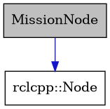

Seabot2 ROS2 API documentation
Add your content using reStructuredText syntax. See the
reStructuredText
documentation for details.
Here s a class diagram generated by Doxygen:
-
class MissionNode : public rclcpp::Node
Inheritance diagram for MissionNode:
Collaboration diagram for MissionNode:
![digraph {
graph [bgcolor="#00000000"]
node [shape=rectangle style=filled fillcolor="#FFFFFF" font=Helvetica padding=2]
edge [color="#1414CE"]
"3" [label="Mission" tooltip="Mission"]
"1" [label="MissionNode" tooltip="MissionNode" fillcolor="#BFBFBF"]
"2" [label="rclcpp::Node" tooltip="rclcpp::Node"]
"4" [label="string" tooltip="string"]
"3" -> "4" [dir=forward tooltip="usage"]
"1" -> "2" [dir=forward tooltip="public-inheritance"]
"1" -> "3" [dir=forward tooltip="usage"]
"1" -> "4" [dir=forward tooltip="usage"]
}](_images/graphviz-da1caf794d5892931a61a5ccb9c6593963674700.png)
Handles ROS2 interfaces and the mission manager.
This class is responsible for providing ROS2 interfaces to the mission manager
Public Functions
-
MissionNode()
Construct a new Mission Node object.
-
MissionNode()